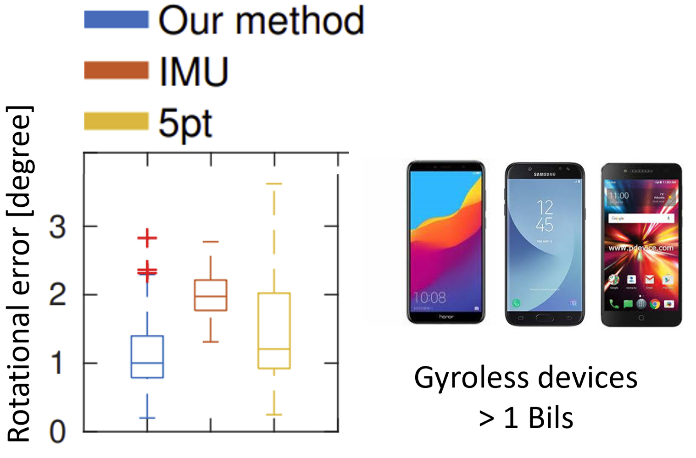
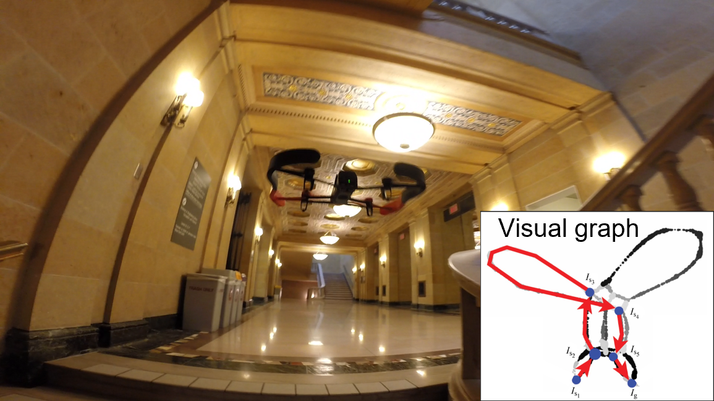

I'm a PhD candidate at the CS&E department, University of Minnesota, where
I'm advised by Prof. Stergios I. Roumeliotis and
Prof. Hyun Soo Park.
My research interests include resource-constrained localization, navigation, and scene reconstruction.
About
Publications
2022
Learning to Detect Scene Landmarks for Camera Localization
Tien Do, Ondrej Miksik, Joseph Degol, Hyun Soo Park, and Sudipta N. Sinha
Computer Vision and Pattern Recognition (CVPR) Oral Presentation
paper | code | dataset
Computer Vision and Pattern Recognition (CVPR) Oral Presentation
paper | code | dataset
Learning to predict 2D-3D correspondences directly without 2D-2D image matching, for
both visible and invisible landmarks. Camera pose is then determined by a robust PnP solver.

Egocentric Scene Understanding via Multimodal Spatial Rectifier
Tien Do, Khiem Vuong, and Hyun Soo Park
Computer Vision and Pattern Recognition (CVPR) Oral Presentation
paper | code | dataset | website
Computer Vision and Pattern Recognition (CVPR) Oral Presentation
paper | code | dataset | website
Extension of the spatial rectifier to the
multi-directional case, applying to depth and surface normal prediction from egocentric view.

2021
Deep Multi-view Depth Estimation with Predicted Uncertainty
Tong Ke, Tien Do, Khiem Vuong, Kourosh Sartipi, and Stergios I. Roumeliotis
International Conference on Robotics and Automation (ICRA)
paper | code
International Conference on Robotics and Automation (ICRA)
paper | code
Depth estimation by multiple-view triangulation, follow by an iterative depth refinement that
preserves estimates with high triangulation confidence.

2020
Deep Depth Estimation from Visual-Inertial SLAM
Kourosh Sartipi, Tien Do, Tong Ke, Khiem Vuong, and Stergios I. Roumeliotis
International Conference on Intelligent Robots and Systems (IROS)
paper | code
International Conference on Intelligent Robots and Systems (IROS)
paper | code
Depth estimation by completing a very sparse VI-SLAM point cloud using planar constraint from robust surface normal prediction .

Surface Normal Estimation of Tilted Images via Spatial Rectifier
Tien Do, Khiem Vuong, Stergios I. Roumeliotis, and Hyun Soo Park
European Conference on Computer Vision (ECCV) Spotlight Presentation
paper | code | website
European Conference on Computer Vision (ECCV) Spotlight Presentation
paper | code | website
Robust surface normal estimation by spatially rectifying image to the densely distributed orientations.

2019
Attitude Tracking from a Camera and an Accelerometer on Gyro-less Devices
Tien Do, Leo Neira, Yang Yang, and Stergios I. Roumeliotis
International Symposium on Robotics Research (ISRR)
paper
International Symposium on Robotics Research (ISRR)
paper
Tracking attitude without gyroscope at 30Hz by relaxing the scale consistent estimate of a
VI-SLAM. Roll, pitch, gyro and accel biases are all observable.

High-speed Autonomous Quadrotor Navigation through Visual and Inertial Paths
Tien Do, Luis C. Carrillo-Arce, and Stergios I. Roumeliotis
International Journal of Robotics Research (IJRR)
paper | website
International Journal of Robotics Research (IJRR)
paper | website
Quadrotor navigation in a topological map represented as a
graph with nodes as images and edges as 2D feature correspondences.
